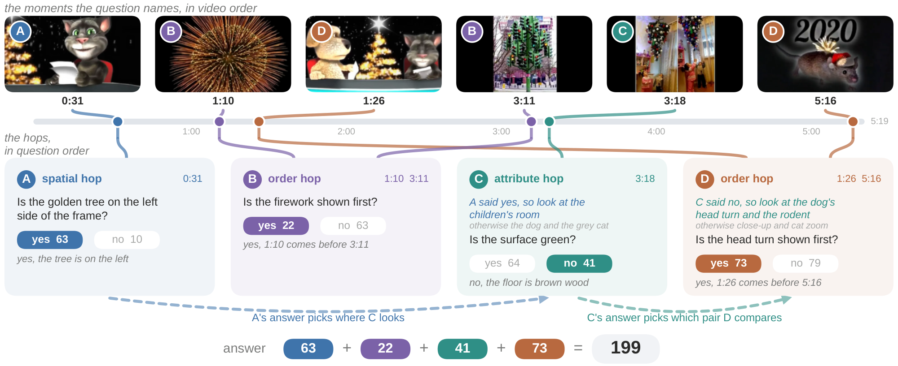
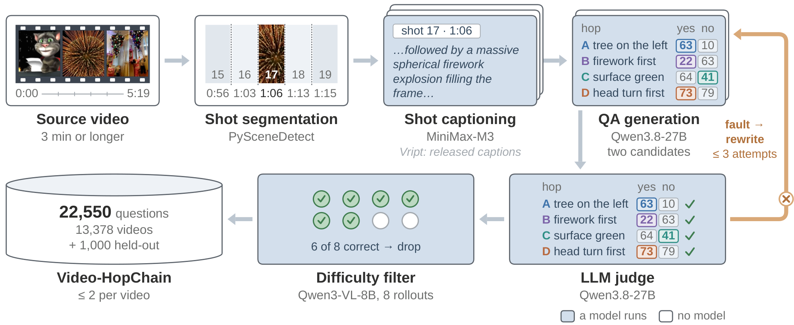
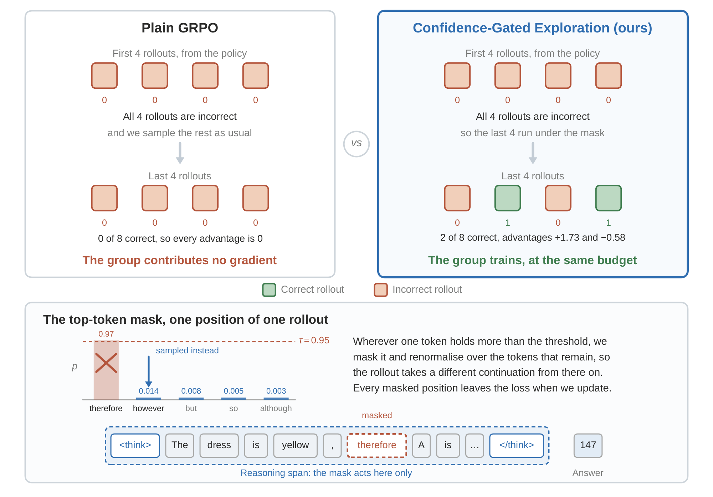
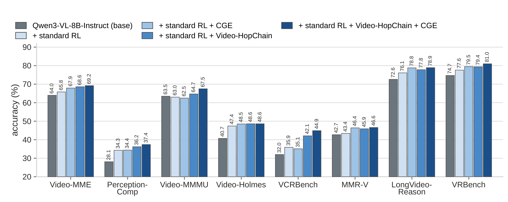
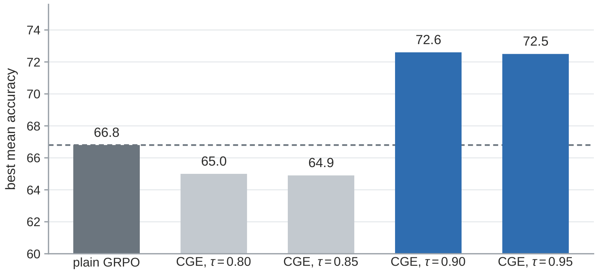
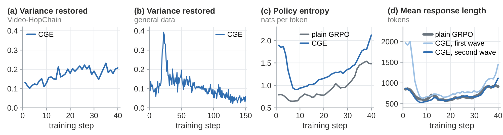

Gate
Sample the first 4 rollouts and score them. If they disagree, the group already carries variance, and the last 4 are sampled as usual.
TL;DR
We build Video-HopChain, 22,550 video questions that chain three to six yes/no hops into one integer answer, so an exact match gives a verifiable reward. We add Confidence-Gated Exploration (CGE), which rescues the GRPO groups that carry no gradient. Together they raise the mean of Qwen3-VL-8B over eight video benchmarks from 52.3 to 59.3.
Overview video
Abstract
HopChain has shown on still images that multi-hop data synthesis improves vision-language reasoning, because long chain-of-thought reasoning exposes errors that compound across steps, while most data used for reinforcement learning with verifiable rewards (RLVR) rarely demands a chain of visual evidence, so these weaknesses are likely to stay unexposed. We observe the same problem in video, where this framework has not yet been explored. We therefore build Video-HopChain, a dataset of 22,550 multi-hop video questions over 13,378 videos, together with a held-out benchmark of 1,000 questions. Each question chains three to six yes/no questions about moments in one video, and each of them yields one of two integers depending on its answer. The final answer is the sum of these integers, so an exact match on that sum gives the verifiable reward that RLVR needs.
We first train Qwen3-VL-8B with GRPO on a standard video dataset, and a second stage on Video-HopChain then raises the mean over eight video understanding and reasoning benchmarks from 55.4 to 57.9 and improves every one of them. Training on such a dataset, however, also exposes a known limitation of GRPO: its learning signal comes from the reward variance within a group, so hard questions whose rollouts are all incorrect and easy questions whose rollouts are all correct both leave the group with no gradient. To recover these groups at the same compute budget, we introduce Confidence-Gated Exploration (CGE). With 8 rollouts per question, CGE samples the first 4 rollouts as usual. If these 4 rollouts are either all correct or all incorrect, it then samples the last 4 rollouts with the policy's most confident token masked inside the reasoning span, and it removes the masked positions from the loss while all 8 rollouts enter the advantage. With CGE, the mean rises further to 59.3. We release the dataset, the checkpoint, the data generation code, and the training code.
The dataset
Every question chains three to six yes/no hops, and each hop asks about a different moment of the same video. Each hop carries two integers: the first counts when the answer is yes, the second when it is no. The answer is the sum. We resample the integers until every combination of hop answers gives a different sum, so one wrong hop always changes the total.

In the scene where a cat sits on a red chair at a circular table with papers in its hand, look at the position of the golden Christmas tree: if the tree is on the left side of the frame, let A be 63; otherwise let A be 10.
Compare two moments: the moment a spherical firework explosion fills the frame, and the moment an outdoor scene shows a tall green pole supporting a cluster of traffic lights. If the firework explosion is shown before the traffic light scene, let B be 22; otherwise let B be 63.
Use the first check to choose where to look: if the tree is on the left side of the frame, look at the room where two children stand beneath an upside-down Christmas tree; otherwise look at the scene where a dog and a grey cat rest on a flat surface with the cat holding one paw raised near its face. In whichever of those two places you were sent to, look at the surface beneath the characters: if the surface is green, let C be 64; otherwise let C be 41.
Use the third check to choose which pair of moments to compare: if the surface is green, compare the moment the dog's face fills the frame in close-up with out-of-focus colored lights on the left against the moment the camera zooms in until the grey cat's face fills most of the frame; if the surface is not green, compare the moment the dog's head is turned toward the cat with a teal banner at the bottom of the frame against the moment a small rodent in a Santa hat is shown with fireworks bursting around it. In whichever pair you were sent to, if the first-named moment is shown before the second-named moment, let D be 73; otherwise let D be 79.

The method
GRPO learns from the reward variance within a group of rollouts. A group whose rollouts are all correct or all incorrect is zero-variance: we roll it out and score it in full, and it contributes no gradient. CGE keeps such a group and samples its second half differently.

Sample the first 4 rollouts and score them. If they disagree, the group already carries variance, and the last 4 are sampled as usual.
If the first 4 are all correct or all incorrect, the last 4 drop the top token wherever its probability exceeds τ = 0.95 inside the reasoning span, and renormalize over the rest.
The masked positions leave the loss. All 8 rollouts enter the group advantage, so the group can train at the same compute budget.
Results
A second stage on Video-HopChain raises the mean and improves every one of the eight benchmarks. Enabling CGE on top of that dataset raises the mean again, and the combined run holds the best value of every column.
| model | VMME | PComp | VMMMU | Holmes | VCR | MMR-V | LVR | VRB | mean | in-domain |
|---|---|---|---|---|---|---|---|---|---|---|
| Qwen3-VL-8B-Instruct | 64.0 | 28.1 | 63.5 | 40.7 | 32.0 | 42.7 | 72.6 | 74.7 | 52.3 | 13.4 |
| + standard RL ckpt | 65.8 | 34.3 | 63.0 | 47.4 | 35.9 | 43.4 | 76.1 | 77.6 | 55.4 | 13.4 |
| + standard RL + CGE | 67.9 | 34.4 | 62.5 | 48.5 | 35.1 | 46.4 | 78.8 | 79.5 | 56.6 | 16.4 |
| + standard RL + Video-HopChain | 68.6 | 36.2 | 64.7 | 48.6 | 42.1 | 45.9 | 77.8 | 79.4 | 57.9 | 21.2 |
| + standard RL + Video-HopChain + CGE ckpt | 69.2 | 37.4 | 67.5 | 48.6 | 44.9 | 46.6 | 78.9 | 81.0 | 59.3 | 23.2 |
Main results, accuracy in percent. The best value of each column is in bold. The last row model is Video-HopChain-8B.
VMME Video-MME · PComp PerceptionComp · VMMMU Video-MMMU · Holmes Video-Holmes · VCR VCRBench (multiple-choice subset) · MMR-V · LVR LongVideo-Reason · VRB VRBench. In-domain is the accuracy on the 1,000 held-out Video-HopChain questions. Every benchmark runs in lmms-eval with 100 frames per video and the same settings for every row.

Video-HopChain-8B gives the best value on most of these benchmarks, ties with Conan on VRBench, and comes a close second on Video-Holmes and on LongVideo-Reason, where OneThinker leads and is the one model of this set that starts from the same base model as ours. We compare released systems rather than recipes, because the ten models differ in base model, training data and compute.
| model | base | VMME | PComp | VMMMU | Holmes | VCR | MMR-V | LVR | VRB |
|---|---|---|---|---|---|---|---|---|---|
| base model | |||||||||
| Qwen3-VL-8B-Instruct† | – | 64.0 | 28.1 | 63.5 | 40.7 | 32.0 | 42.7 | 72.6 | 74.7 |
| open-source video reasoning models | |||||||||
| Video-R1 | Qwen2.5-VL-7B | 61.4 | 26.3 | 52.4 | 36.5 | 48.0★ | 36.3★ | 68.1 | 69.5★ |
| VideoChat-R1 | Qwen2.5-VL-7B | 60.0 | 28.6 | 46.4 | 33.0 | 48.2★ | 36.1★ | 67.2 | 61.5★ |
| VideoRFT | Qwen2.5-VL-7B | 59.8 | – | 51.1 | – | – | – | – | – |
| Video-RTS | Qwen2.5-VL-7B | 63.0 | – | 52.7 | 40.7 | – | – | – | – |
| Video-KTR | Qwen2.5-VL-7B | 62.5 | – | 53.1 | 42.7 | – | – | – | – |
| Video-Thinker | Qwen2.5-VL-7B | – | – | – | 43.2 | – | – | – | 80.7 |
| Video-o3 | Qwen2.5-VL-7B | 66.5 | – | 51.7 | 46.5 | – | 44.7 | – | – |
| Conan | Qwen2.5-VL-7B | – | – | – | 44.6 | 51.0★ | 42.7 | 72.8 | 81.0 |
| LongVILA-R1 | LongVILA-7B | 65.1 | – | 51.0 | – | – | – | 72.0 | – |
| OneThinker | Qwen3-VL-8B | 66.5 | – | 66.2 | 48.7 | – | – | 79.2 | – |
| Video-HopChain-8B (ours) ckpt | Qwen3-VL-8B | 69.2 | 37.4 | 67.5 | 48.6 | 44.9 | 46.6 | 78.9 | 81.0 |
A dash marks an unreported number. The best value of each column is bold and the second best is underlined. ★ A value taken from Conan. † A result that we reproduce under our own setting.

| run | τ | best mean |
|---|---|---|
| plain GRPO | — | 66.8 |
| CGE | 0.80 | 65.0† |
| CGE | 0.85 | 64.9† |
| CGE | 0.90 | 72.6 |
| CGE | 0.95 | 72.5 |
| CGE, all-incorrect only | 0.95 | 66.7 |
Ablations run on the OpenMMReasoner image dataset, because one RL step on video costs 2,275 seconds on four nodes. † A run that never learns the answer format. Between 0.90 and 0.95 the threshold needs no tuning. Intervening on all-incorrect groups alone is no better than plain GRPO, because most zero-variance groups are all correct.
Training signal

On Video-HopChain the share of intervened groups whose variance returns grows from about one in seven to one in five, so CGE gives about half again as many groups with a gradient at the same compute budget.
The policy entropy of CGE stays a few tenths of a nat above plain GRPO for the whole run, although both runs reach the same training reward.
The mask acts only inside the reasoning span, so a multi-hop chain offers it many more decision points than a multiple-choice question about a single shot.
Citation
@misc{nguyenquang2026videohopchain,
title = {Video-HopChain: Multi-Hop Questions and Confidence-Gated Exploration for Video Reasoning Models},
author = {Nguyen Quang, Trung and Dong, Yuhao and Sun, Shuo and Liu, Shuai and Tian, Shulin and Yap, Kim-Hui and Liu, Ziwei},
year = {2026},
eprint = {2609.25773},
archivePrefix = {arXiv},
primaryClass = {cs.CV},
url = {https://arxiv.org/abs/2609.25773}
}